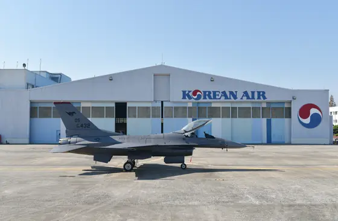

미 공군 · 주한 · 주일미군
BEFORE비행 가능 시간 8,000시간 기체 AFTER2022.11 수명연장 초도기 출고 · 12,000시간
F-16 수명연장(SLEP)
2020.11 – 2030.09 · 2,900억원
비행 가능 시간
8,000시간→12,000시간
- 1동체 중앙 주요 구조물 보강 · 교체
- 2날개 주요 구조물 보강 · 교체
항공기 정비의 최상위 단계. 1984년부터 F-16 890여 대를 창정비 · 성능개량